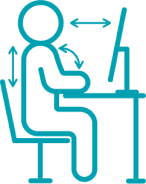

Práticas sustentáveis que minimizam impactos ambientais.
Práticas sustentáveis que minimizam impactos ambientais.
Práticas sustentáveis que minimizam impactos ambientais.


O Perito é nomeado pelo Juiz para prover prova pericial, enquanto o Assistente Técnico, indicado pelas partes, emite parecer sobre o caso.Cada parte do processo (réu e autor) podem nomear um profissional com Curso Superior especializado para atuar como assistente técnico naquele processo.
Veja o Curriculum
Perícias precisas para ambientes eficientes e saudáveis.
Suporte técnico para otimizar ações legais.
Essencial para segurança, prevenção de desastres e resolução de conflitos.
Auditoria médica estratégica para saúde financeira.

Dr Marins Perito - Todos os Direitos Reservados